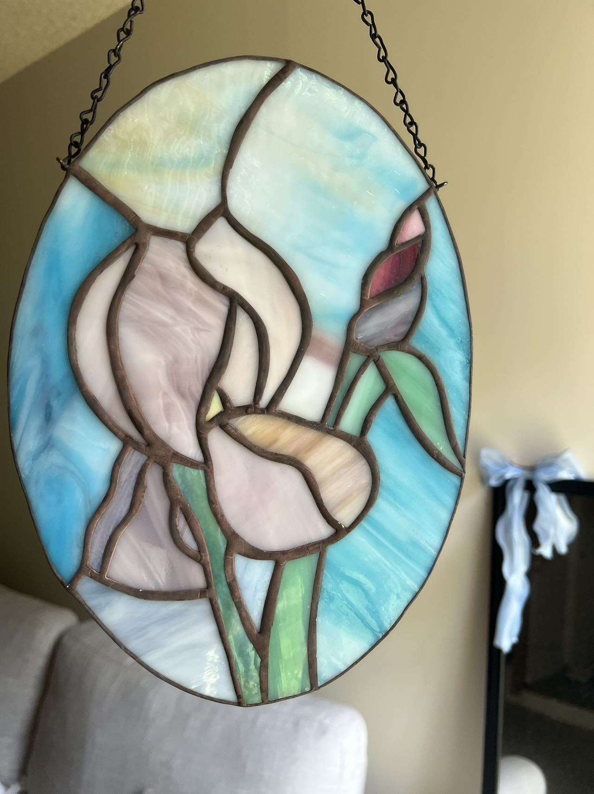
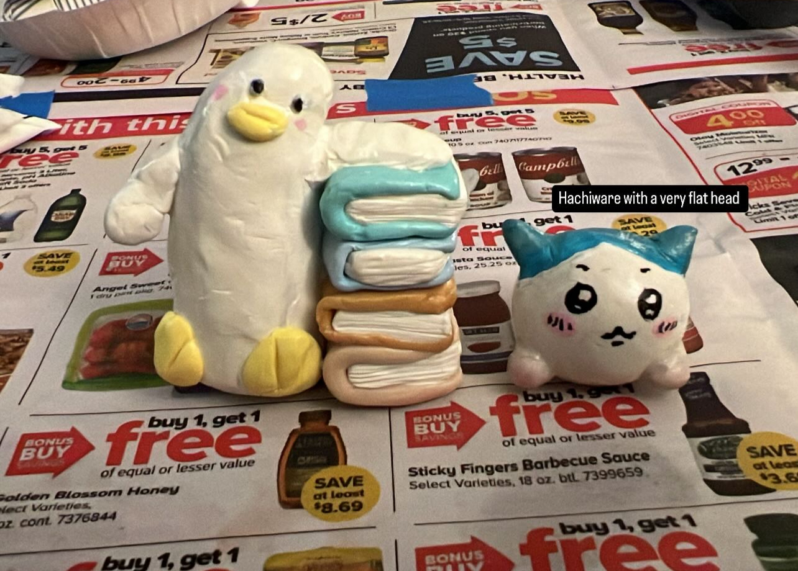
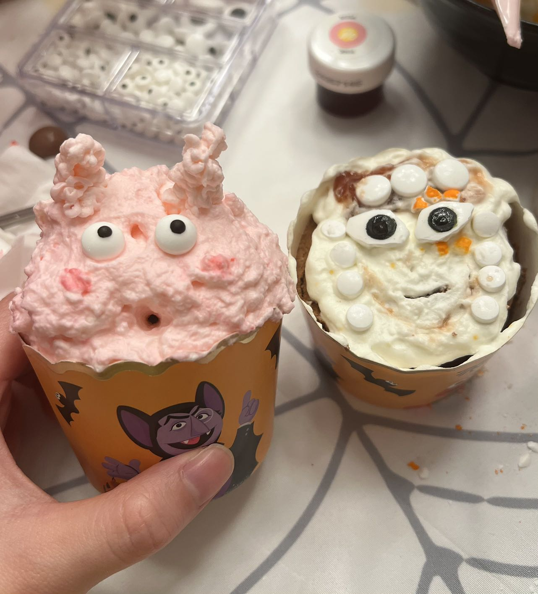
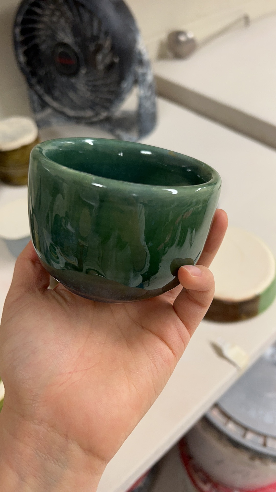

Personal Life
Outside of research, I enjoy swimming, reading novels, playing video games (I love Final Fantasy!), and creating small art and craft projects. Here are a few photos of things I’ve made and moments I enjoy 😊🌸✨



